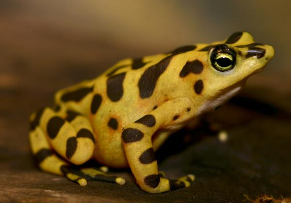

| La rana dorada de Panamá | ||
|---|---|---|
|
La rana dorada es una especie autóctona del itsmo de Panamá. Este tipo de anfibio de encuentra extinto en el país desde 2007, sin embargo aún se presenvan ejemplares en cautiverio que evitan la extinción total de la especie. Su nombre científico es Atelopus zeteki. Viven en bosques húmedos trópicales, de preferencia a horilla de los arroyos. Actualmente no pueden vivir en los bosques del país por la deforestación y la contaminación. | ||
|  | ||